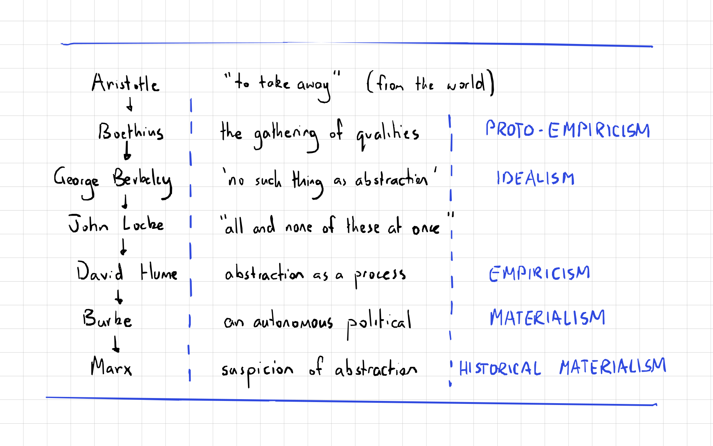

I started reading Alma Steingart's 2023 Axiomatics: Mathematical THought and High Modernism in preparation for a reading group on Math(s), Philosophy, and History that I have been running for almost a year now. (We meet approximately bi-weekly, and wander from text to text based on the group's discussion and shared interest.) Steingart's narrative is deeply relevant to the third stream of my disseration, the question of mathematics in the 20th century, as it argues that there is an intellectual history of (the rise of) axiomatics in mathematics in the 20th century that corresponds to modernist cultures of art, linguistics, sociology, and other disciplines that became infatuated with mathematical rigor in the ascent of "the postwar abstractionist theory of knowledge" (Steingart 2023, 23). Concretely, Steingart promises (in the introduction) to provide an account of how topology and category theory can be understood as mathematical cultures that represent what she calls "high modernist mathematics" (Steingart 2023, 20), how the utility of mathematics in various disciplines took on a more 'abstract' character after the war in projects such as game theory, and how the abstract character of axiomatic mathematics bears a relation to the "aesthetic autonomy" (Steingart 2023, 22) of artistic formalism and stucturalist anthropology, among other disciplines that were coming to be characterized by a flirtation with mathematization, during the Cold War era.
The book's introduction frames this effort in intellectual history through a smattering of terms that constellate the 'bigger picture' which theoretically coheres each individual chapter's analysis of more specific historical actors and moments. It took me a second reading to begin to feel like they were adequately disambiguated, but I now feel that they give a helpful coherence to Steingart's project. The important terms clarified in the book's introduction, which I will develop in pairs in this b/log, are as follows:
- Abstraction
- Modernism
- High Modernism
- Axiomatics
- Mathematics
- Mathematization
Abstraction and Modernism
Abstraction is the principal term that grounds Steingart's inquiry, and thus in the introduction she accordingly gives us two, mutually informing accounts of it: "one following abstraction's history as a mode of thought and the other as a marker of modernism" (Steingart 2023, 6).

The history of abstraction as a mode of thought (pp.6-10) is summarised above. Historically speaking (for Steingart), abstraction originates in a quandary regarding language's apprehension of the physical world. How do apparently universalizing words such as 'color' emerge from the world's particularity? Thought, it seems, must have to take something away from the world, to abstract something from it, in order to produce such concepts.
The pivotal figure in this sketch of a condensed history is George Berkeley. Berkeley is "a staunch idealist" (Steingart 2023, 7); yet he is also the first in Steingart's condensed history to strongly rebuke abstraction. For Berkeley, "reality consists exclusively of minds and their ideas" (Downing 2021); yet Steingart pens Berkeley as notable in the history of abstraction precisely because he refuses to allow a conceptual space of ideas that is not firmly rooted in the phenomenological world of ideas (Steingart 2023, 7).
With Berkeley, the nature of the difference between idealism and materialism is revealed clearly as a contradiction, Steingart seems to suggest. She glosses over the philosophical specificity of Berkeley's claim by lumping him in with the empiricists Locke and Hume: "What Locke, Berkeley, and Hume made clear is that the problem of abstraction as an operative mode of thought touches directly on the foundations of geometry, the signification function of language, and the relation between perception and reason" (Steingart 2023, 8). Fair enough here, perhaps, as Steingart has flagged up front that her concern is not with the nuances of philosophical positions on the matter of abstraction, so much as it is with painting a historical canvas which provides context for what she means when she says 'abstraction' in the rest of the book. The lineage presented does make clear what is at stake in abstraction (notwithstanding its suspicously British contrivance): namely, the sticky and difficult relationship between mind and matter, subject and object, idealism and materialism. Though this is a strange progression from Aristotle to Marx in some respects, it sets the stage for the way in which abstract mathematics dances around the politicality of its own position, an argument that Steingart will make with respect to concrete actors in the 20th century.
The 'other side' of abstraction's definition, Steingart has told us, is its apparent entanglement with modernism (p.10). There doesn't seem to be any notable distinction between modernity and modernism for Steingart, and this slippage allows Steingart to settle on Fredic Jameson's account in his 2013 book A Singular Modernity as the backstop for the claim that modernism and abstraction are two sides of the same coin. I haven't yet read this book of Jameson's, and so I can't be sure of the following points. But I would hazard a guess that modernity for Jameson is structurally coupled with the problematic of the mangling of subject and object that Marx argues is a symptom ('fetish') of capital's installment as a social relation, and thus bemoans a philosophical history reaching back at least to Descartes if not further; whereas modernism refers instead to an aesthetic category that is historically specific to the 20th century (whence Jameson's infamous critique of postmodernism). Modernism is not unrelated to modernity, which is why Steingart's account that "the association of abstraction and modernism is not a continuation of the long philosophical and political tradition I just outlined, but instead represents a clean break from it" (Steingart 2023, 10) strikes me as a bit suspicious.
Steingart wants to segment (or perhaps we should say 'abstract') 20th-century abstraction from its pre-20th-century forebears by recognizing the newer phenomenon as a "severing of abstraction from the phenomenological world" , a turn away from the "etymological root" of abstraction in its reference to something of the world (Steingart 2023, 11). But isn't something of this operation already at work in the various idealisms that contest the empiricism of Hume, Locke, and Boethius in the 18th and 19th centuries? We could offer the names Descartes, Kant, and Hegel, for example, as a counter-history of Steingart's abstraction, a lineage which also culminates in an important sense in the first master of suspicion, Marx. All three of these thinkers were (it doesn't seem controversial to claim) concerned with the status of thought on its own terms, thought 'for itself' that was ideally purified of phenomenological reference. This German lineage as a counterpoint to the British one Steingart gives at the least proves that the "crisis of referentiality" (Steingart 2023, 12) of the 20th century is not the first such crisis that abstraction suffered in philosophy. The curious triad of "linguistics and scientific philosophy" (Steingart 2023, 12) that is then given to evidence abstraction's reversal of meaning in the 20th century– Ferdinand de Saussure, Albert Einstein, and Alfred North Whitehead– are brought into the historical-philosophical fray almost as if there is no precedent for the problem of the object, the subject, and the sphere of signification that necessarily traverses the two in language. It might be that 'modernism' names a distinct inflection of the constitutive problematic of modernity in the 20th century, but it is not clear to me that this inflection's distinction rests neatly on its reversal of abstraction's etymological root in the phenomenological world.
High Modernism and Axiomatics
High modernism for Steingart is above all associated with David Hilbert and the crisis in foundations of mathematics. In other words, high modernism emerges as a dialect of modernism through the proliferation of the axiomatic method (associated with Hilbert) in mathematics and other disciplines. The Bourbaki group is given as "the most extreme example of mathematical high modernism" (Steingart 2023, 17), as they emblematise a particular configuration of the relationship between mathematical theory and empirical reality. High modernist mathematics sees theory as a practice/process that is constituted as an autonomous aesthetic domain, free from the demanding contrivances of the (material) world. The high modernist attitude is fundamentally idealist in the sense that the domain of thought and theory is not borne of patterns or perceptions in the phenomenological world, but autonomously, on its own terms. Mathematical theory for the high modernist is conceived beyond or besides the world, but is then tested by its applications in the world. This phenomenology of theory in mathematical high modernism is what gives the history of axiomatics' proliferation its seemingly contradictory characters, "denoting the rationalization of social life on the one hand and the promotion of an autonomous aesthetic sphere on the other" (Steingart 2023, 18). For Steingart, game theory, communications theory, operations research, and computing (by which I assume she means the burgeoning discipline of Computer Science) all suffer this kind of speculative pragmatics that is both idealistic and utilitarian (Steingart 2023, 19), and can all thus be united in axiomatics as their common rationale and prehistory.
Grouping these histories under the rubric of high modernism is evocative also, as Steingart notes, due to James Scott's use of the term as "a particularly sweeping vision of how the benefits of technical and scientific progress might be applied" (Steingart 2023, 17). High modernism names a technocratic worldview that parades as thoroughly materialist, but which in fact is built on an unconscious idealist kernel that hazards scientific theory as autonomous (and thus unimpeachable) rather than grounded in the world and our flawed phenomenology of it. Perhaps it is this quality, i.e. the repression of an idealist basis for the claim of scientific validity, that better characterizes high modernism's break from the modernisms (and modernities) before it. Berkeley, Hume, and Burke would then be correctly identified as the prime philosophical actors in mathematical high modernism's prehistory, but for reasons to do with the way that they each repress in their own way the necessary politics of abstraction, enshrining some part of it as independent of the world and thus paving the way for its unimpeachability. (Kant would surely also feature prominently in this historical drama.)
Though the distinction between abstraction, modernism, and high modernism took me a second reading to make out clearly in Steingart's introduction, axiomatics appeared early as a clear intellectual historical object (if such a thing can be thought to exist). Axiomatics are the methods in mathematics based on the spectral objectivity of numbers posited at the turn of the twentieth century, newly realized through the questioning of their basis in physical reality.
What are numbers? Within the new regime of objectivity, neither the empiricist nor the idealist answer was acceptable. Numbers were not arrived at by counting, nor were they synthetic a priori. (Steingart 2023, 13)
Cantor goes curiously unmentioned, but we get the other usual suspects in Dedekind, Peano, Frege, and Hilbert. Steingart's argument is that the proliferation of axiomatics within mathematics and their percolation throughout other disciplines in the humanities and the sciences should be considered a high modernism in the history of abstraction.
Mathematics and Mathematization
The final two terms I wanted to disambiguate are these. While mathematics seems to usually refer to the actual disciplinary practice of professional mathematicians (and thus 'mathematical high modernism' is an appropriate description of axiomatics' preponderance at universities in postwar America), mathematization seems to refer instead to the dissemination of paradigms in mathematics to other disciplines, such as sociology, anthropology, and linguistics, as well as how mathematical technique was consciously applied in these other disciplines. To the extent that Steingart's book is a story about mathematization, then, it is in the company of recent books such as Bernard Dionysus Geoghegan's Code: From Information Theory to French Theory in that it accounts for how mathematics became the Hermes of a disciplinary pantheon conceptually divided into the humanities and the sciences. (Along with Computer Science, mathematics is– I think– one of the few undergraduate degrees in America that is offered both as a Bachelor of Arts and as a Bachelor of Science, depending on the granting institution.)
Many now are taking issue with mathematization as a sort of root cause of much that is disagreeable politically about the contemporary world. It seems important to me that we give nuance to the claim, made by many these days, that it is mathematization (or Computer Science) as such that is the problem, if only because throwing out maths and computing tout court is not an option on the table. I intend to proceed with reading the rest of this book because it offers some such nuance in locating axiomatics as a specific culture in mathematics and tracing its social and (perhaps) political effects.